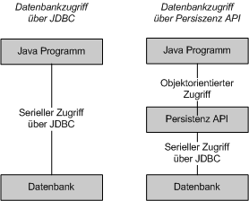

47.1 Einleitung
In Kapitel 44 haben wir gesehen,
wie man mit Hilfe von Datenbanktreibern und der Abfragesprache SQL
relationale Datenbanken mit Java-Programmen verknüpfen und Daten
ein- bzw. auslesen kann. Die serielle Art und Weise des Zugriffs auf
relationale Datenbanken harmoniert dabei nicht immer mit der objektorientierten
Programmierung.
Über die Jahre hinweg entwickelte sich deshalb eine weitere Technik,
die eine objektorientierte Verknüpfung von Datenbanken und Programmiersprachen
gestattet und unter dem Namen Object Relational Mapping
(ORM) bekannt wurde. Dabei basiert
der Zugriff auf die im Hintergrund arbeitende Datenbank weiterhin
auf JDBC und SQL, zusätzlich kommt jedoch eine objektorientierte
Zugriffsschicht hinzu, mit der die Datenbankergebnisse in Java-Objekte
überführt werden, bevor sie dem Entwickler zur Verfügung
gestellt werden.

Abbildung 47.1: Datenbankzugriff mit JDBC und ORM
Statt langwieriger SQL-Zugriffe und manueller Transformation eines
ResultSet in Java-Objekte kann
der Entwickler diese nun einfach direkt laden bzw. mit einem Konstruktor
erzeugen und die Fließbandarbeit dem Persistenz API überlassen.
Das in diesem Kapitel vorgestellte Java Persistenz API (JPA) ist seit
dem JDK 5 Bestandteil von Java und vereinigt die Frameworks der Java
Data Objects (JDO) und der Entity Beans
(EJB). Während JDOs auf die Java Standard Edition zugeschnitten
sind, können die leistungsfähigeren EJBs nur in einem Java
EE Application Server zur Ausführung gebracht werden. Die neue
Technologie vereint die Vorteile beider Welten und lässt sich
sowohl mit der Standard als auch mit der Enterprise Edition verwenden.
47.1.1 Bezug und Installation
Das Persistenz API ist noch kein fester Bestandteil der Java Standard
Edition, sondern kann als eigenständige Technologie von der Homepage
http://jcp.org/en/jsr/detail?id=317
heruntergeladen werden. Ähnlich wie mit JDBC liefert Oracle mit
dem Java Persistenz API zunächst nur einen Satz standardisierter
Schnittstellen, die anschließend von einer Implementierung ausgefüllt
werden müssen.
Zum Glück gibt es eine Reihe freier OpenSource-Implementierungen,
wie etwa das in diesem Buch verwendete Hibernate-Framework. Es besteht
aus einer Reihe von JAR-Archiven, die Sie von der Homepage http://www.hibernate.org
herunterladen können.
Um die in diesem Kapitel vorgestellten Beispiele ausführen zu
können, genügt es, die Bibliotheken für die Hibernate-Implementierung
und die HSQLDB von der Homepage herunterzuladen und in den Classpath
zu integrieren. Sie benötigen die Pakete Core und Annotations.
Die Verwendung des Classpath wird unter anderem in Abschnitt 14.4.1
vorgestellt.
Als Datenbank soll auch in diesem Kapitel die bereits bekannte HSQLDB
mit den Tabellen der DirDB dienen, die in Abschnitt 44.3
beschrieben wird. Doch anstatt die Einträge der Verzeichnisse
und Dateien mit SQL auszulesen, werden wir uns in diesem Kapitel entsprechender
Java-Objekte bedienen.
Der erste Teil dieses Kapitels führt grundsätzlich in die
Verwendung des Java Persistenz API ein und zeigt, wie man einfache
Datenbanktabellen mit Java Beans modellieren kann. Der zweite Teil
widmet sich den relationalen Verknüpfungen von Datensätzen
und zeigt, wie man diese mit Java-Strukturen abbilden kann.